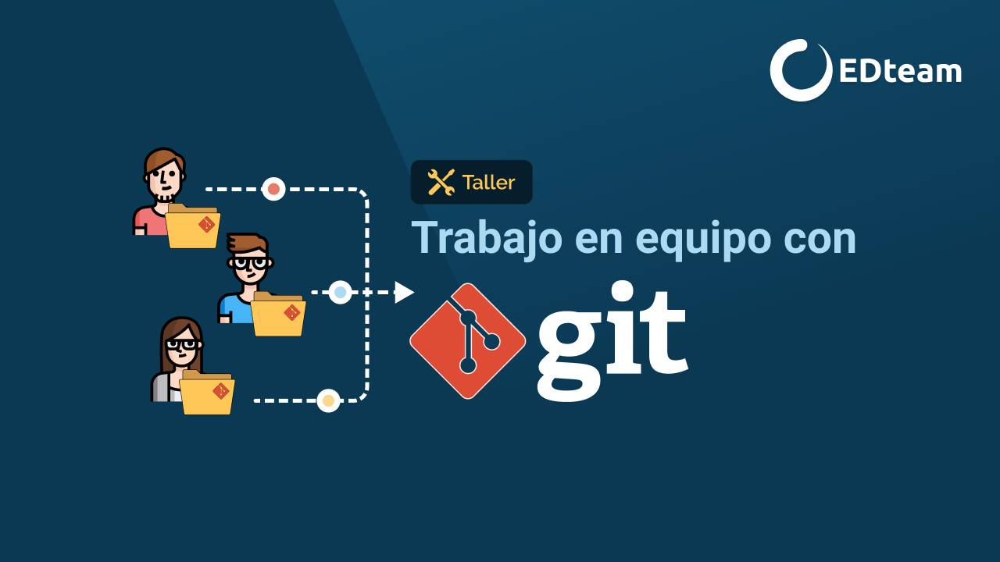

Uso de GitHub en proyectos colaborativos.
Este evento trata sobre cómo utilizar GitHub para gestionar proyectos en equipo, incluyendo el uso de ramas, pull requests y la resolución de conflictos de código.

Bienvenidos a la Universidad Americana UAM en Managua, Nicaragua.
Este evento trata sobre cómo utilizar GitHub para gestionar proyectos en equipo, incluyendo el uso de ramas, pull requests y la resolución de conflictos de código.
Este evento está diseñado para enseñar los conceptos básicos de Docker, incluyendo la creación de contenedores, la gestión de imágenes y cómo utilizar Docker para simplificar y optimizar los entornos de desarrollo.
Este evento está enfocado en proporcionar los conocimientos esenciales para configurar y administrar servidores Linux. Aprenderás sobre la instalación de sistemas operativos, configuración de redes, gestión de usuarios y permisos, así como la implementación de servicios básicos como servidores web y de bases de datos.